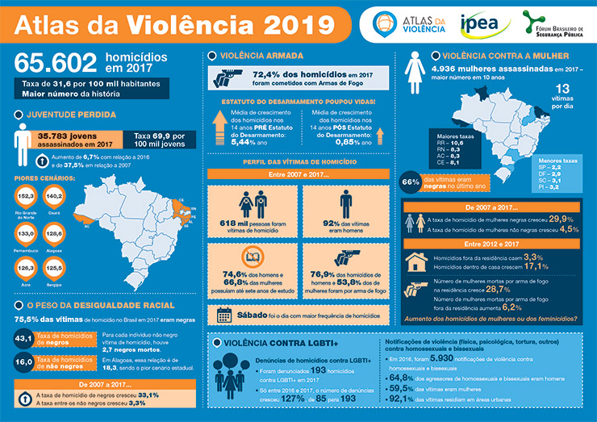

Favela venceu?
Posted on Janeiro 31, 2020
Quem acessa com frequência as redes sociais, assiste programas de auditórios, entrevistas na televisão, ou acompanha nomes que fazem sucesso atualmente no mundo artístico, com certeza já se deparou com a afirmação “Favela venceu”.
Esse termo é bastante utilizado por indivíduos que nasceram em uma situação socioeconômica de baixo nível, e conseguiram se destacar, de alguma forma, no cenário nacional. É uma tentativa de empoderar todos aqueles que vivem na comunidade. Agora fica uma dúvida, a favela de fato venceu? Ou é só palavras ditas, que representa apenas quem vos fala? Precisamos debater.
Todos nós, brasileiros, cidadãos, acompanhamos constantemente nos noticiários que, infelizmente, a favela não venceu. Vários fatores explicam essa afirmação. Jovens morrem diariamente. A educação na comunidade, a educação para POBRES FAVELADOS, é de baixa qualidade, não sendo uma opção, um caminho para um futuro de realizações. A saúde? Nem se discute. Ou morre em uma fila de um hospital, ou põe a fé em ação para poder se safar da doença. A segurança, quando não protege (quase nunca), mata. Essas evidências apresentadas, são indiscutíveis.
Na Segurança
Segundo o Atlas da Violência 2019, mais de 35 mil jovens foram assassinados em 2017. Em relação a 2007, o aumento foi de 37,5%. O cenário? Talvez piore. As políticas públicas que estão sendo adotadas atualmente, saem mais barato. Matar um jovem favelado sem “futuro”, ou investir na educação? O governo não pensa duas vezes. A criminalidade só tende a aumentar. O ódio da população favelada pela polícia também. Porém é válido pensar e se perguntar: será que a culpa é totalmente dos policiais? Com certeza não. Em partes, eles estão obedecendo ordens, não são preparados, e nem valorizados de forma correta… enfim, são treinados praticamente para matar.

Na Educação
Não é de hoje que a educação está em péssimas condições. O rendimento é baixo por parte dos alunos. O investimento é mal direcionado por parte do Estado. Os professores e demais funcionários da educação são desvalorizados.
Não é fácil para um jovem apenas “estudar”, isso porque a realidade social é diferente do que é desenhado. É necessário na maioria das vezes deixar a educação de lado, para trabalhar, por exemplo. Ou talvez entrar na criminalidade. Parece ser o mais viável. Quando você, na realidade de um favelado, vê que não existe nenhuma perspectiva, incetivo ou interesse por parte do Estado, nasce um desânimo.
Na saúde e infraestrutura
Quando chove? Desespero. A certeza da inundação é evidente. Saneamento básico? Zero por cento. A população da favela já está esquecida há décadas. Historicamente as favelas são compostas por operários, que migraram para a cidade grande, visando uma qualidade de emprego e de vida, melhor. O urbano não comportou o nível em massa que estava chegando, e muitos tiveram que planejar uma moradia sem muita base de engenharia. Desde então, continuam nesse mesmo dilema.
A saúde é outro fator. Falta de remédio é constante. As filas nos hospitais são cotidianas. Macas nos corredores já são decorativas. É o auge do descaso.
Por fim, a frase “Favela venceu” está no sentido figurado para a maioria. Vale ressaltar que não está sendo tirado o mérito daqueles que proclamam esta frase. Devemos sim considerar uma vitória, o fato de um indivíduo conseguir vencer batalhas, e se superar na vida, mesmo com uma realidade difícil, devendo sim, inspirar a todos. Mas, infelizmente, a favela em si e seus indivíduos, ainda não venceram.